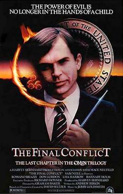

El Conflicto final |
||
|---|---|---|
|  | Sinopsis: Damien Thorn (Sam Neill), de 32 años, es un ser cruel, frío y calculador que ha sido engendrado por el diablo y cuyo único objetivo es dominar el mundo. Con tal de conseguir sus propósitos está dispuesto a matara todo el que se cruce en su camino. Sólo un abnegado sacerdote (Brazzi), cuya misión es destruir al Anticristo y que tiene en su poder las siete dagas sagradas de Megiddo, se interpone entre Damien y su deseo de sembrar el caos y la destrucción. |
Reparto:Sam Neill, Rossano Brazzi, Don Gordon Año: 1981 Duracion:108 min Pais:Estados Unidos |
Criticas Profesionales:Dorian Málaga (España)Para mi gusto nadie podía haber terminado esta saga en la piel de Damien mejor que Sam Neill, este papel era para el y hasta guarda un cierto parecido con el Demien de la segunda parte y un poco de esencia con el Damien niño de la primera. |
Trailer |
Obtener:AlquilarComprar |
Registrate/Iniciar Sesion